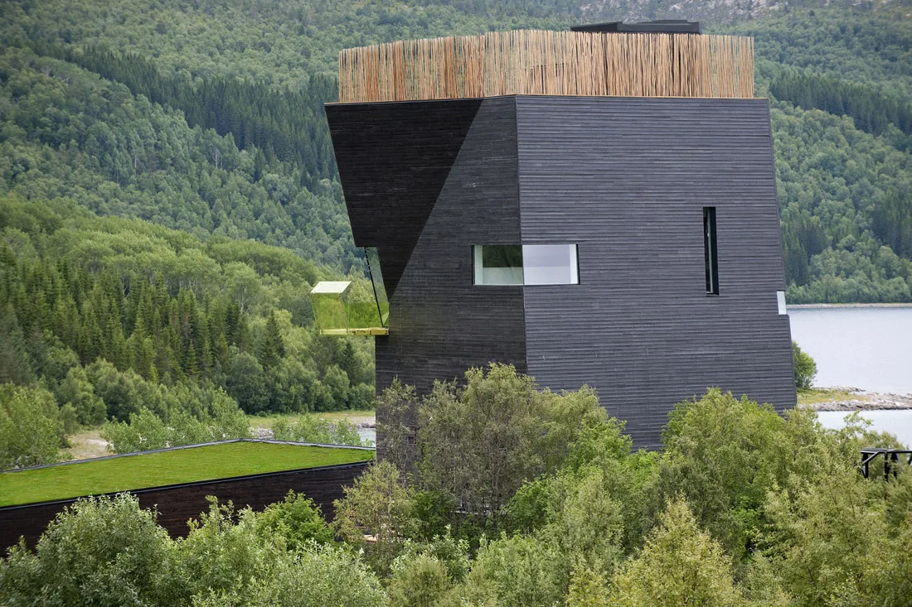
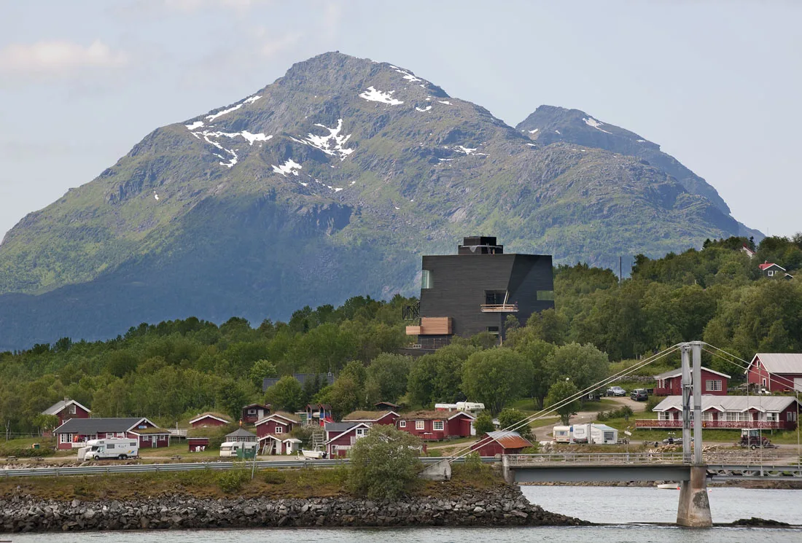
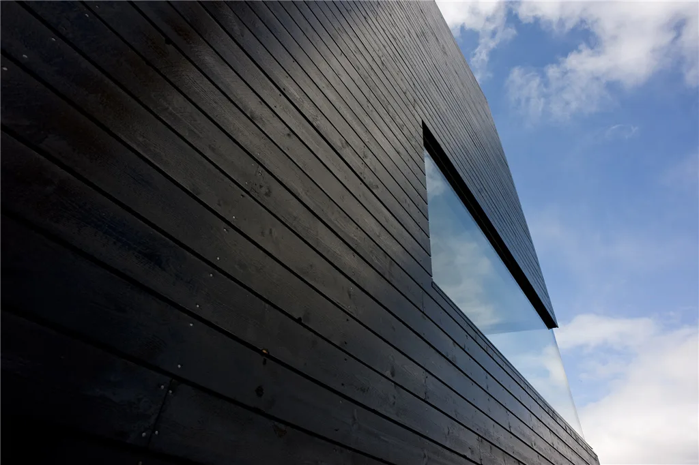
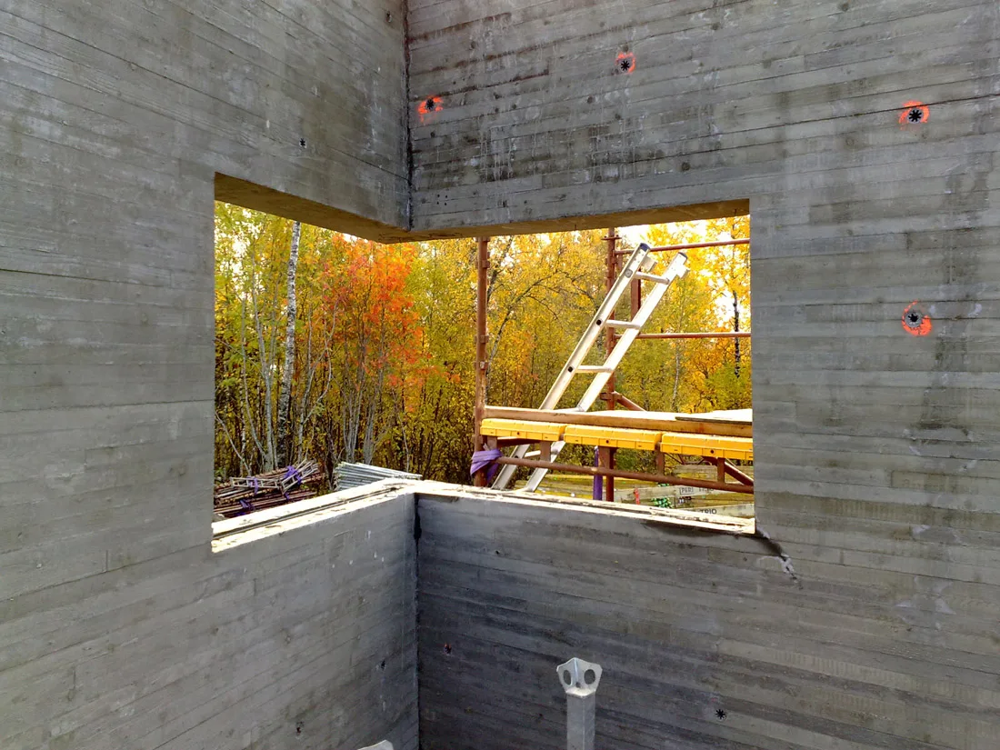
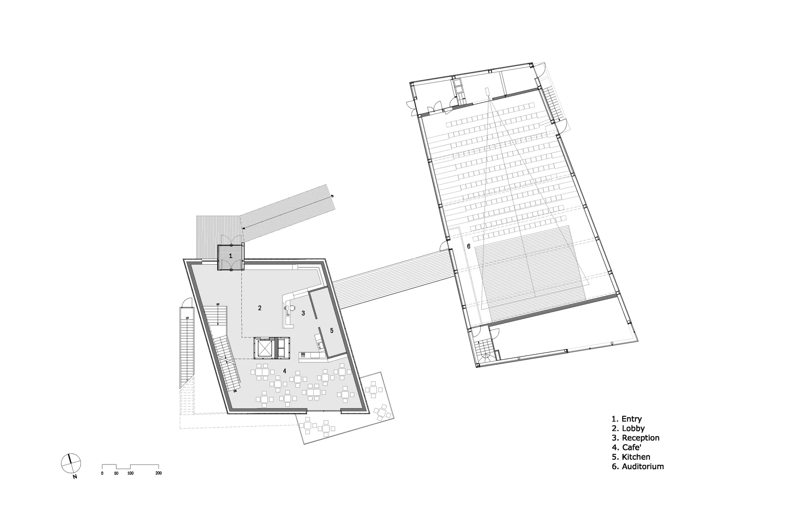
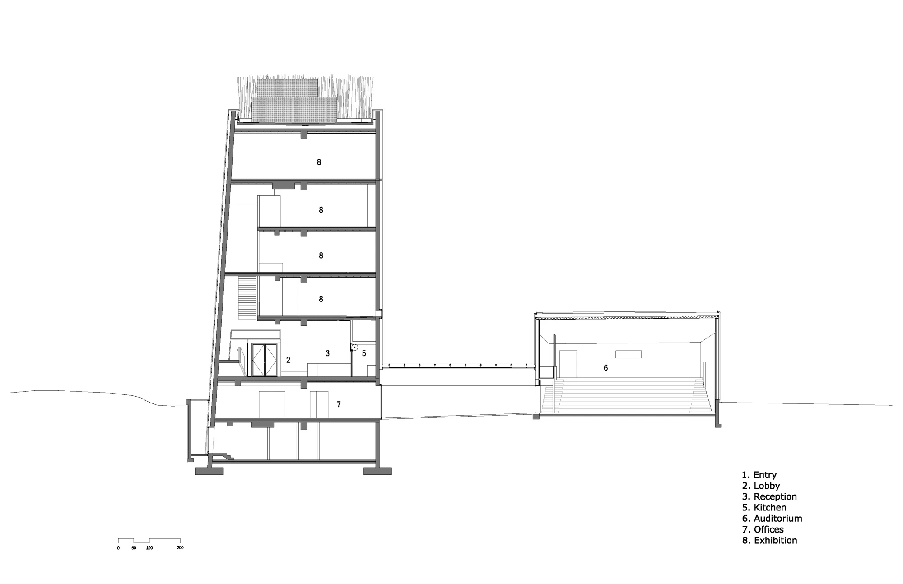

Literary museum and cultural centre · 2009
Knut Hamsun Center
Steven Holl Architects + LY Arkitekter
Hamarøy, Norway
Exhibition spaces present Hamsun's life and writing, while a library and reading room support study. An auditorium adds a setting for museum and community events, joining private engagement with literature to collective cultural activity.
Holl conceived the building as a body shaped by hidden impulses, translating literary ideas into irregular openings and changing light. Black timber recalls Norwegian stave churches, while angled sunlight enters a board-formed concrete interior with unexpected shifts of perspective.


Relevant connections
SHOW
Exhibitions and an auditorium communicate literature through displays and events.
Images and drawings / 06









